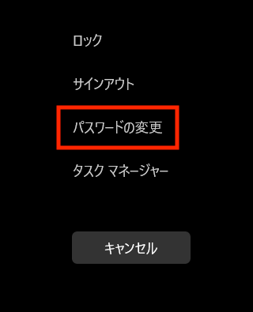

03 ICT環境について
- 拓殖大学のICT環境について理解する。
- K ドライブが使えるようになる。
- OneDrive の仕組み、使い方を理解する。
- ワード、エクセル のオンライン編集、共同編集について理解する。
- ファイルのダウンロードについて理解する。
メールの書き方、MS Teams、Zoomの使い方については、本日は時間がないので、別途扱います。
ログインパスワードの変更
入学オリエンテーションの際に配布されたオレンジ色の紙に記載のIDとパスワードは、大学の様々なシステムにログインする際の共通のIDとパスワードです。
自分が覚えやすいパスワードに変更することをお勧めします。
パスワードは、大文字、小文字、数字、記号を含む12桁で設定します。
大学に設置されているパソコンから、「Ctrl + Alt + Delete」を同時に押すと変更できます。

拓殖大学のICT環境
大学から付与されるIDを使用して『Microsoft 365』『学生Webメール』、『Blackboard』、『就職Web』、『Zoom』等の各種学生向けネットサービスが利用できます。拓殖大学ホームページの『Takudai Portal』からログインでき、学外（自宅）からも利用できます。
キャンパスで使えるパソコンの案内です。
ICT 関連の必要な情報はこちらにあります。
これらの情報には、WEB検索でも辿り着くことができます。「拓殖大学 ICT」で検索してください。
K ドライブ
大学のパソコンはシャットダウンするたびに初期化されるため、大学のパソコンで作業したファイルは初期化されない場所に保存する必要があります。
拓殖大学では「Kドライブ」と呼ばれるドライブ（保存領域）が、各学生に割り当てられています。シャットダウンしても初期化されることはなく、大学内のどのパソコンからでもアクセスすることができます。
デスクトップ左上のPCから、Kドライブを開きます。

以下のように、フォルダのアドレスが（K:）となっいてることを確認してください。

Kドライブを開いている状態で、「新規作成」から「フォルダ」を選び、新規フォルダを作成します。授業や目的ごとに整理して使います。

OneDrive
OneDrive とは？（仕組み）
OneDrive は、Microsoft が提供するオンラインストレージ（クラウド）サービスです。 簡単に言うと、「インターネット上にある自分専用の USB メモリ」のようなものです。
なぜ使うの？（メリット）
- どこでからでもアクセス：大学の PC で作った課題を、自宅のスマホやノート PC で続きから編集できます。
- 自動保存：ファイルを上書き保存し忘れても、自動的にクラウドへ保存されます。
- バックアップ：PC が壊れても、データは Microsoft のサーバーにあるので安心です。
基本的な使い方
ログイン
大学のメールアドレスとパスワードを使って、Microsoft 365 からサインインします。（「マイクロソフト365」で検索すればログイン画面にたどり着けます。）ファイルのアップロード
- ブラウザで OneDrive を開きます。
- フォルダへ直接ファイルを ドラッグ＆ドロップ するだけで完了です。
- ブラウザで OneDrive を開きます。
共有機能
グループワークなどで友達とファイルを共有したい時は、以下の手順で行います。- ファイルを選択して「共有」をクリック。
- 相手のメールアドレスを入力するか、リンクをコピーして送ります。
- ファイルを選択して「共有」をクリック。
注意： 共有設定には「閲覧のみ」と「編集可能」があります。用途に合わせて選びましょう。
大学生活で役立つ「同期」機能
自分のノート PC に OneDrive アプリ をインストールすると、普通のフォルダと同じ感覚で使えます。
PC の「ドキュメント」フォルダを同期:
PC 内に保存するだけで自動的にクラウドへ反映されます。同期： 右下の雲のアイコンに「!」マークが出ていたら、同期が止まっています。クリックして内容を確認しましょう。
オンライン編集・共同編集
OneDrive上で共有されているファイル（ワード・エクセルなど）は、共同で編集することができます。グループで課題に取り組む際などに便利に使えます。
私のOneDrive に経済1組のメンバーに共有するアカデミックスキルのフォルダを作りました。今後は、授業の中でこのフォルダを使います。
ファイルのダウンロード
ブラウザからダウンロードしたファイルは、「ダウンロード」というフォルダに格納されています。（ダウンロードの際に別のフォルダを指定した場合を除きます。）
ダウンロードフォルダから適切なフォルダに移して使います。
課題 1：自己紹介のエクセル
1年生の後期になると2年次から開始されるゼミのエントリーが行われます。その際、ほとんどの先生が「ゼミエントリーシート」（エクセルで作成）をメールで送付するように指示します。
しかし、多くの学生がエクセルやコンピューターの扱いに不慣れなことから、満足にエントリーシートを提出できません。（手書きのシートを写メに撮り送る学生も多くいます、、、。）
そこで、アカデミックスキルの最初に行う課題「自己紹介」を、この「ゼミエントリーシート」の形式に沿って行います。
Blackboard にアップロードされている「課題1_自己紹介_ゼミエントリーフォーマット」をダウンロードし、記入してください。
5月1日（金）24：00までに Blackboard から提出してください。
連絡事項
履修登録取消期間
履修登録取消制度とは、履修登録して授業を受けたものの、「授業内容が勉強したいものと違っていた」「授業についていけるだけの学力が不足していた」等の理由により履修登録の取り消しを認めるもので、単位修得できないことによりＧＰＡが下がることを回避するための制度です。
【2026 年度 履修登録取消期間】
| 学期 | 期間 |
|---|---|
| 前期 | 5月7日（木）から5月9日（土） |
| 後期 | 10月17日（土）から10月19日（月） |
次の 1〜6 をよく理解したうえで、申請してください。
所定期間に Takudai Portal にて申請することで履修登録の取消が認められます。
取消科目数の制限は設けません。ただし、全科目の取消はできません。なお、４年生については取消後の履修登録単位数が最低履修登録単位数を下回ることはできません。
通年科目は、前期履修登録取消期間にのみ取り消すことができます。
取り消した科目は、学業成績表の最終評価に「W」がつきます。次年度以降は記載されません。
登録を取り消しても、履修登録単位制限（年間上限４４単位）の計算からは除外されません。
取り消した科目は、取消期間終了後、Takudai Portal の My 時間割で確認してください。取り消さ れていない場合は、所定の期日（別途お知らせ）までに学務課まで申し出てください。所定の期日 以降の申し出は一切認めません。
※「2026 年度 時間割表・履修登録資料」19～20 頁にもこの制度についての説明があります。
＜GPA はなぜ重要か＞
- GPA が高いと学内外の奨学金を獲得するために有利にはたらきます。
- GPA が高いと就職活動に有利にはたらきます。
- GPA が低い学生には保護者とともに面談を実施することがあります。
学習支援室「学サポ」
- 学習支援室支援概要の紹介
- 支援内容の紹介
論文・レポートの書き方支援、日本語の支援（日本語能力試験対策・日本語補習等）
簿記会計の支援
- 支援内容の紹介
- 利用可能な学生
- 日本人学生・留学生
（日本人の学生も論文・レポートの書き方や構成の相談、日本語チェックなどで利用可能です）
- 日本人学生・留学生
- 方法
- 対面・TEAMS
次週の予定
来週 5月4日 祝日 休
5月11日 第 4 回 パソコン室・PC 4